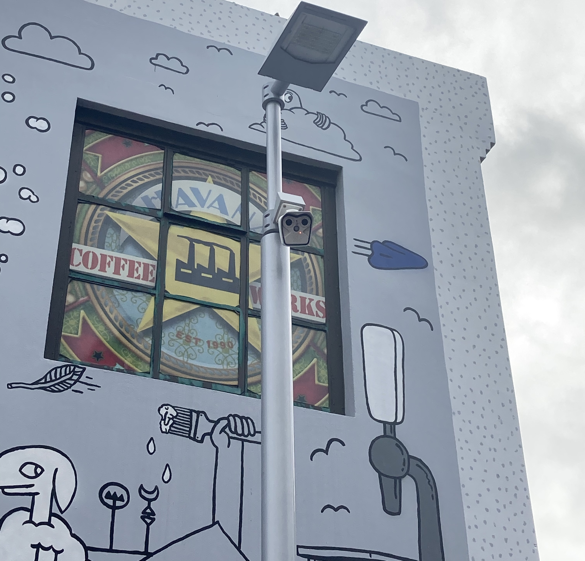
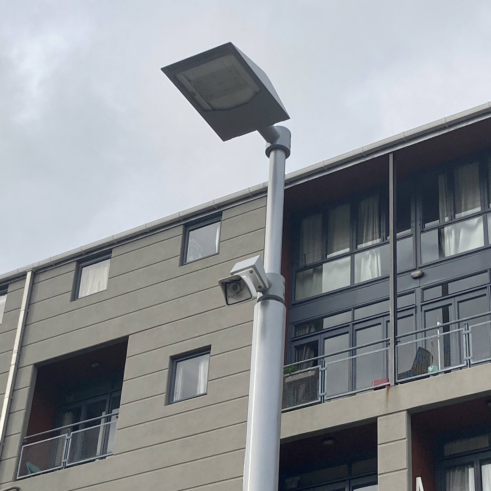
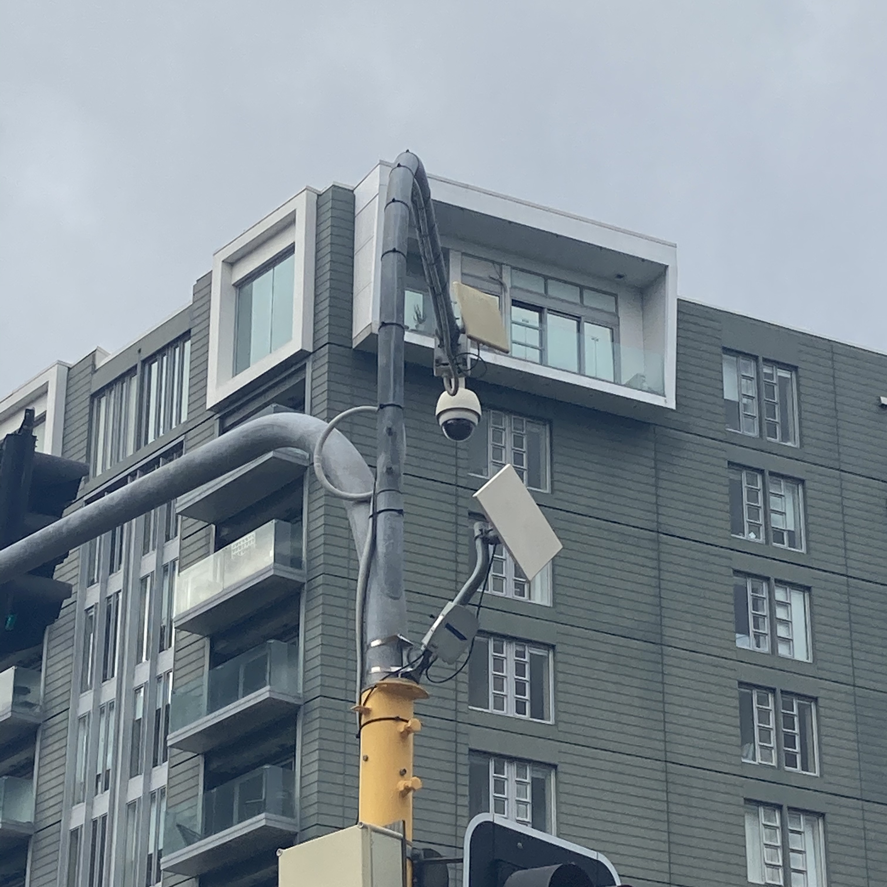
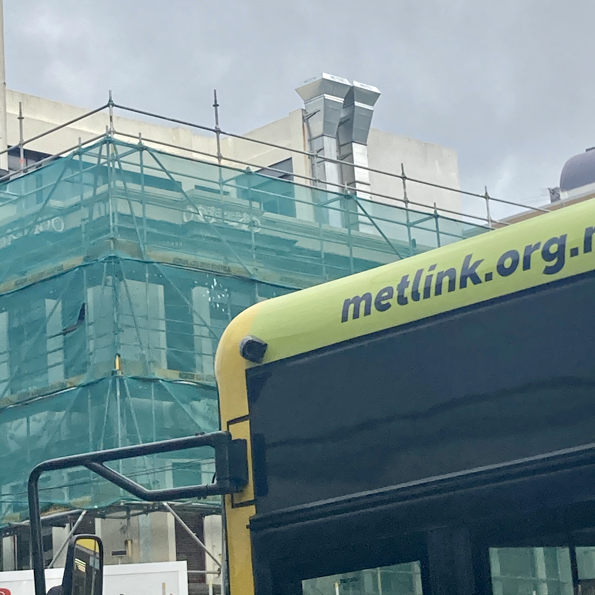
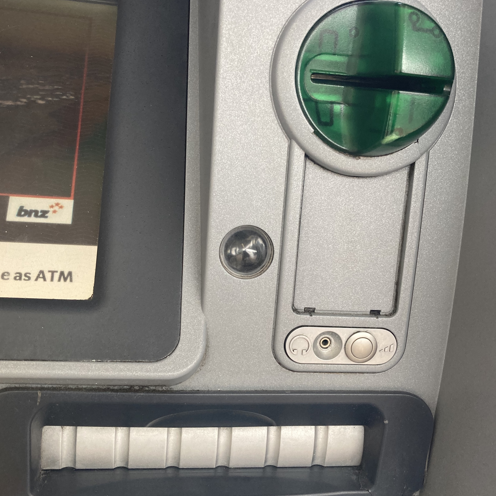
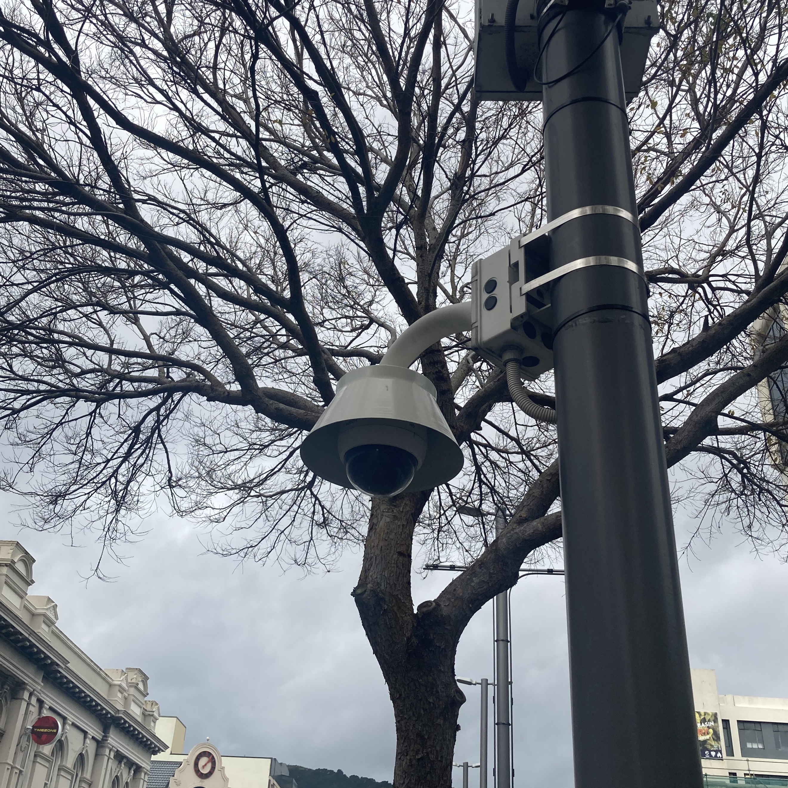
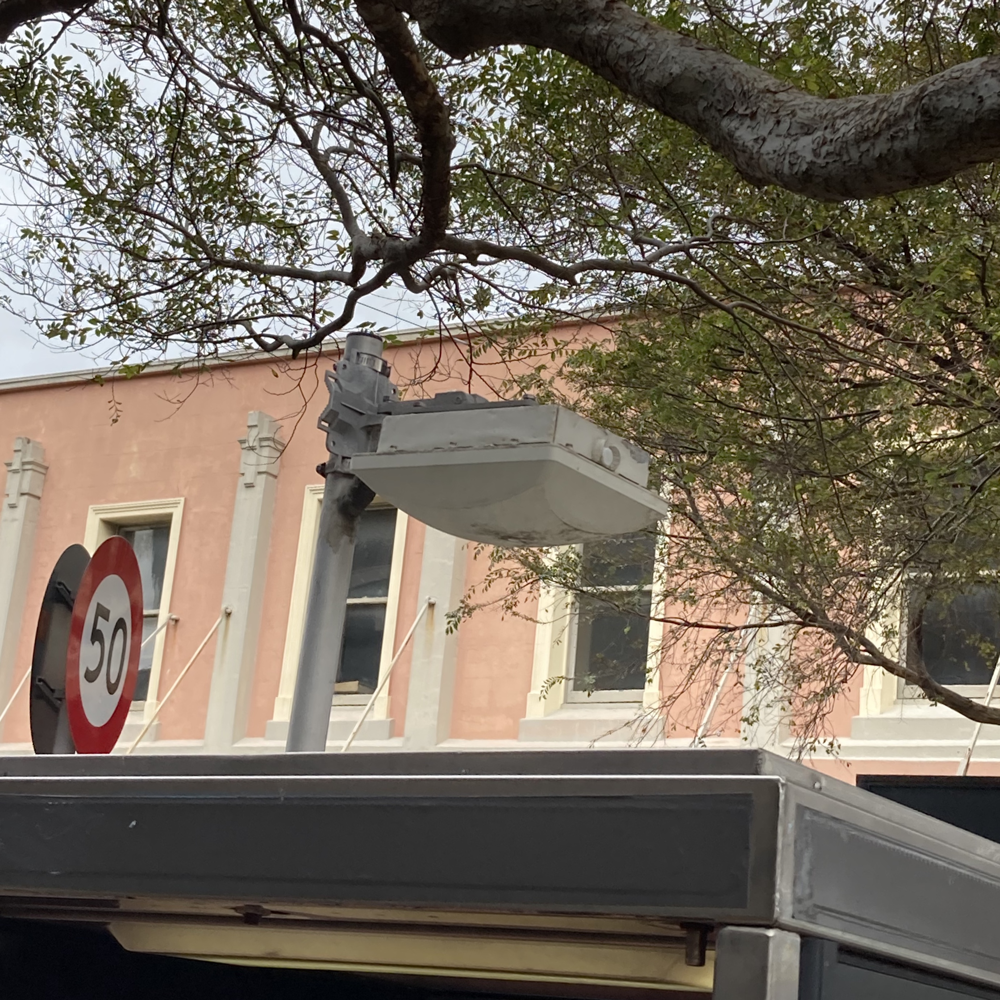
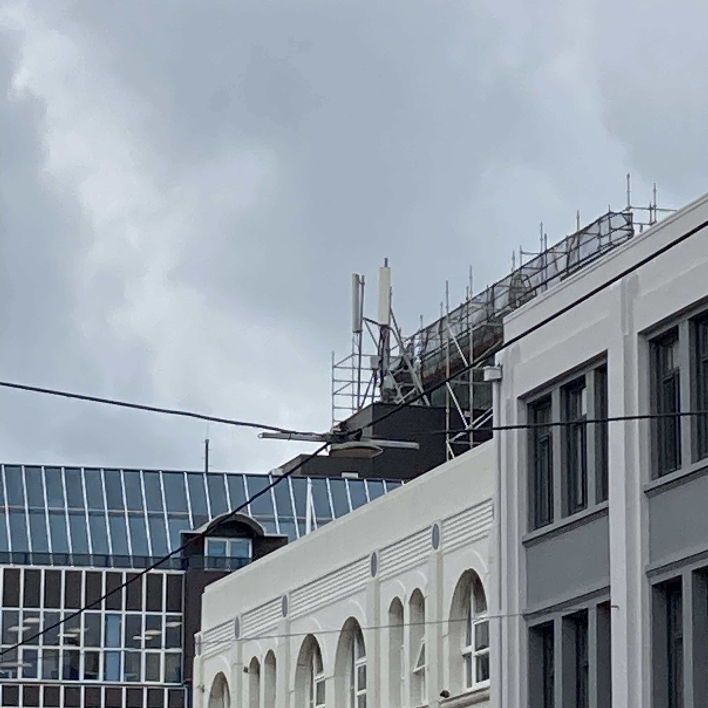
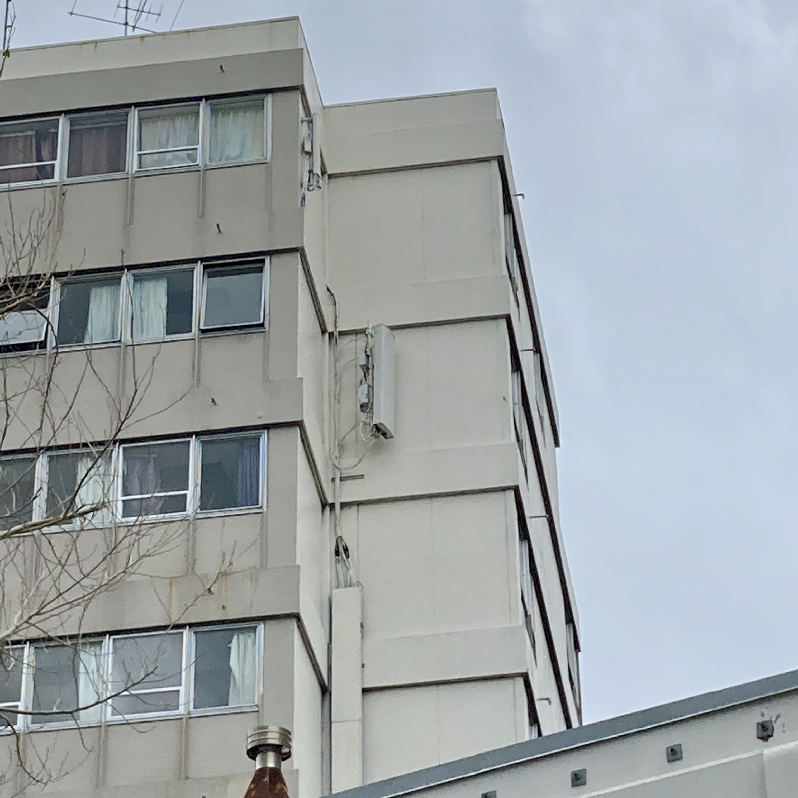
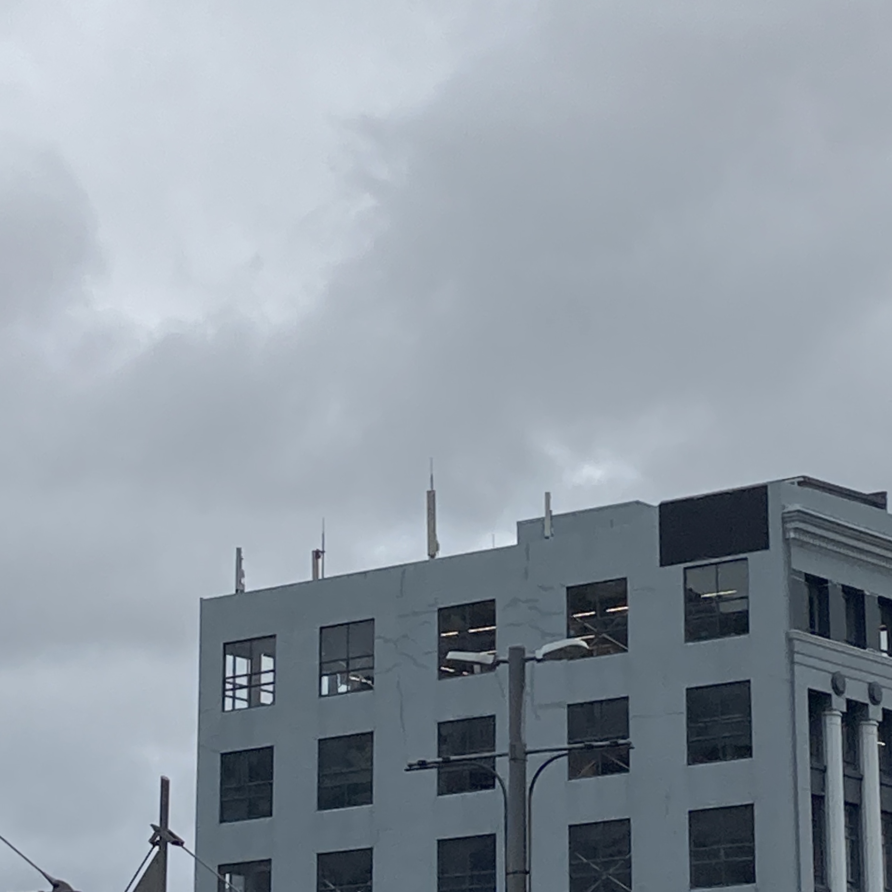

Seeing Networks in Wellington City
Wellington's network infrastructure, is big and goes great length throught the CBD and neighbouring suburbs.
It helps connect over 200,000 people everyday through the use of mobile and wireless networks. It also helps keep a tab on the city with a range of camera's sprawling throughout.
These are used to help fight crime and ensure the saftey of everyday kiwi's.






Surveillance is the monitoring of behavior, activities, or information for the purpose of information gathering, influencing, managing or directing. This can include observation from a distance by means of electronic equipment, such as closed-circuit television (CCTV), or interception of electronically transmitted information, such as Internet traffic. It can also include simple technical methods, such as human intelligence gathering and postal interception.




An antenna is the interface between radio waves propagating through space and electric currents moving in metal conductors, used with a transmitter or receiver. In transmission, a radio transmitter supplies an electric current to the antenna's terminals, and the antenna radiates the energy from the current as electromagnetic waves (radio waves).
In reception, an antenna intercepts some of the power of a radio wave in order to produce an electric current at its terminals, that is applied to a receiver to be amplified. Antennas are essential components of all radio equipment.
Road surface marking is any kind of device or material that is used on a road surface in order to convey official information; they are commonly placed with road marking machines (or road marking equipment, pavement marking equipment). They can also be applied in other facilities used by vehicles to mark parking spaces or designate areas for other uses.